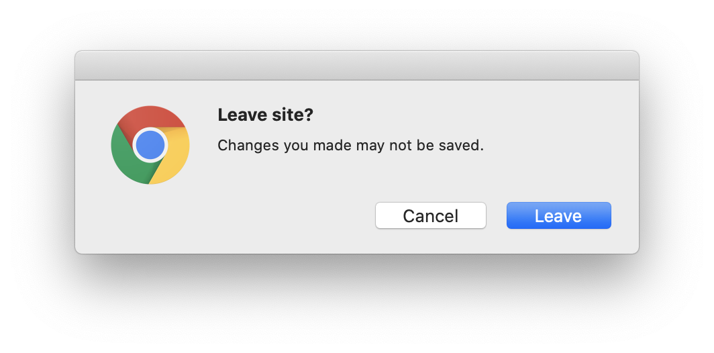

Thanks to Tim Yang, PrairieLearn will now warn you if you forget to save an answer to a question before leaving the page.
If you type an answer into a question but forget to "Save" or "Save & Grade" it, when you leave the page you'll get a pop-up warning like this:
You can either click "Leave" to keep going and discard your answer, or "Cancel" to go back to the page and save your answer. The exact form of this warning will depend on which web browser you use, and some browsers might not always show it.